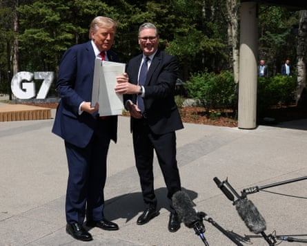

The US dollar is on track for its worst first half-year in more than 50 years, after six months in which financial markets were dominated by geopolitical crises and Donald Trump’s trade war.
The dollar has fallen by more than 10% against a basket of currencies since the start of 2025. That is its worst performance over the first six months of any year since 1973, and the worst half-year since the second half of 1991.
This sell-off has pulled the dollar index down to its lowest level since March 2022, and lifted the pound to a three-year high of $1.37, up from $1.25 at the start of the year.
Investors have been selling the US currency due to concerns that Trump’s economic policies threaten the safe-haven role of US dollar-denominated assets, with economists predicting that the president’s “big beautiful” budget bill will drive the US national debt even higher.
“The US dollar is the most notable loser so far this year, as it has lost 10% against other currencies, with investor concerns regarding Trump’s policies having weighed on the greenback. On the other hand, the euro has risen by 5%,” analysts at Unicredit said.
David Morrison, a senior market analyst at the financial services company Trade Nation, said: “Trump’s tariffs, the fact that many investors view his administration as somewhat chaotic, along with concerns over US national debt have seen the dollar fall out of favour.”
Rising expectations of US interest rate cuts have also hurt the dollar, as Trump repeatedly criticised the Federal Reserve chair, Jerome Powell, for not lowering borrowing costs, and hinted that Powell’s replacement would push for rate reductions and could be named early.
Chris Iggo, the chair of the Axa IM Investment Institute, said broader market returns had been strong in the first half of 2025. “Any sell-off in risky assets has been quickly reversed. Even measures of implied volatility have moved lower. Traders are betting more heavily on multiple US interest rate cuts,” he said.
Stock markets have had a turbulent 2025 so far – most have posted gains over the last six months but getting there was a bumpy journey.
Carsten Brzeski, the global head of macro at ING Research, said it had been an “action-packed” first six months of the year, with key developments including “tariffs, market volatility, questions about Fed independence, a US credit downgrade, fiscal stimulus on steroids, rising debt, deportations, visa restrictions for foreign students, the war in Ukraine entering its fourth year, and Germany doing a fiscal U-turn with a likely doubling of defence spending”.
Donald Trump and Keir Starmersigned off a US-UK trade dealearlier this month at the G7 summit in Canada.Photograph: Suzanne Plunkett/PA
US and European markets weakened through March, as Trump sparred with China, Mexico and Canada over trade deals, before a global sell-off in early April after his announcement of hefty “Liberation Day” tariffs alarmed investors. That tumble – the worst week for the US stock market since 2020 – appeared to alarm the White House, prompting a 90-day pause to tariffs and claims of “Taco” – Trump always chickens out .
So although the US has only signed a single trade deal so far, with the UK, hopes of further progress – or a further pause to tariffs – triggered a historic rebound that lifted the S&P 500 index of US stocks to a record high by the end of June.
According to Bloomberg, it was only the third time in the last 100 years that the S&P 500 has dropped 10% and rebounded to a gain within the same calendar quarter.
Ipek Ozkardeskaya, a senior analyst at Swissquote Bank, said US equities had “fully brushed off” the sell-off led by the trade war.
“Funny enough, the rally was not necessarily backed by material progress in trade negotiations, but rather by the so-called Taco trade and Fomo – with Taco standing for ‘Trump always chickens out’ and Fomo standing for ‘fear of missing out’ on the chickening out,” she said. “There’s also the conviction that the Federal Reserve will cut rates sooner rather than later, that earnings growth will remain strong despite trade uncertainties, and that AI will eventually boost productivity and reduce costs.”
Even so, US markets have lagged behind some European markets. The S&P 500 has only gained 5% during 2025 so far, slower than the pan-European Stoxx 600 (+7%), the UK’s FTSE 100 (up 7.6%), or Germany’s Dax (up 20%).
The UK has been one of the best performing regions globally for investors in the first half of 2025.
“Tariffs, downgrades to earnings and economic forecasts and geopolitical conflict were the defining factors for markets in the first half of 2025,” said Dan Coatsworth, an investment analyst at AJ Bell. “They’ve caused considerable uncertainty which has affected asset prices, as well as business and consumer confidence. It’s led to one of the biggest shifts in investor preferences for years, with certain parts of the market coming to life and previous winners losing their crown. We’re now seeing the great big asset allocation reset and the US is no longer top choice for many investor portfolios.”
Technology stocks have had a mixed half-year. Shares in Facebook’s owner, Meta, had a strong six months, up 25%, as its artificial intelligence investments have driven revenue growth . Apple, though, has lost almost 20%, due to fears tariffs on imports from China will hurt its US operations and that it has fallen behind in the AI race.
Dean Turner, an economist at UBS, said it had been an “interesting” time for investors.
“Optimism at the start of the year, driven by solid growth and earnings, was eviscerated as markets digested the ‘Liberation Day’ tariff announcements, which triggered the steepest equity correction since the pandemic – the S&P 500 fell 10.5% in two days, volatility spiked, and the dollar weakened. Since then, markets have rebounded quickly as some tariffs were paused and strong AI earnings supported a recovery,” he said.
2025 has also been another strong year for gold. Its price has jumped by 25% as investors have sought out safe-haven assets.